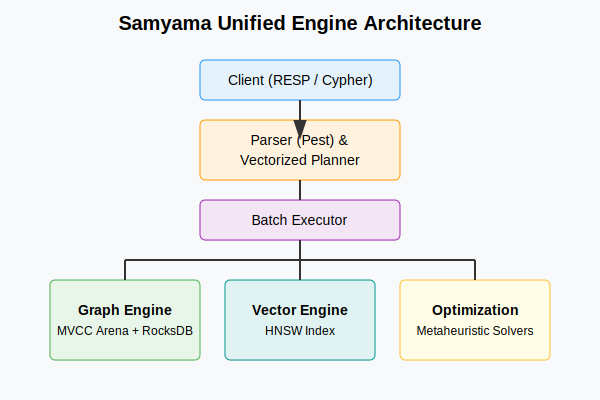

Preface
In the rapidly evolving landscape of data systems, we often find ourselves gluing together disparate technologies to build a complete platform. We use Redis for caching, Neo4j for graphs, Qdrant or Pinecone for vectors, and Spark for analytics. This fragmentation leads to “Frankenstein” architectures—complex, fragile, and hard to maintain.
Samyama (Sanskrit for “Integration” or “Binding together”) was born from a desire to collapse this complexity.
Why can’t a single engine handle the transactional integrity of a graph, the semantic power of vectors, and the raw speed of in-memory analytics? Why must we choose between the flexibility of Cypher and the performance of compiled code?
This book is the story of building Samyama-Graph, a modern, high-performance graph database written in Rust. It is not just a user manual; it is an architectural deep dive. We will peel back the layers to show you how it works—from the byte-level serialization in RocksDB to the lock-free concurrency of our MVCC engine, and up to the distributed consensus algorithms that keep it alive.
Why Rust?
When building a database in the 2020s, the choice of language is pivotal. We chose Rust not just for its hype, but for its promise: Fearless Concurrency.
A graph database is, by definition, a pointer-chasing engine. It demands random memory access patterns that are notoriously hard to optimize and easy to mess up (hello, segmentation faults!). Rust’s ownership model allowed us to implement complex memory management strategies—like Arena Allocation and localized reference counting—without the overhead of a Garbage Collector or the safety risks of C++.
Who is this book for?
- System Architects who want to understand the internals of a modern database.
- Rust Developers curious about real-world patterns for FFI, concurrency, and distributed systems.
- Data Engineers looking for a unified solution for their graph and AI workloads.
Let’s begin the journey.
Persistence at Scale
Every database must answer a fundamental question: How do we not lose data?
For an in-memory graph database like Samyama, this is doubly critical. While we prioritize speed by keeping the active dataset in RAM, we need a robust, battle-tested persistence layer to ensure durability (the ‘D’ in ACID) and to support datasets larger than memory.
We chose RocksDB.
Why RocksDB?
RocksDB, originally forked from Google’s LevelDB by Facebook, is an embedded key-value store based on a Log-Structured Merge-Tree (LSM-Tree). It is the industry standard for high-performance storage engines, powering systems like CockroachDB, TiKV, and Kafka Streams.
The LSM-Tree Advantage
Graph workloads are write-heavy. Creating a single “relationship” between two nodes might involve updating adjacency lists on both ends, updating indices, and writing to the transaction log.
Traditional B-Tree storage (used by Postgres, MySQL) suffers from Write Amplification—changing a few bytes can require rewriting entire 4KB or 8KB pages.
LSM-Trees solve this by turning random writes into sequential ones:
- WAL (Write-Ahead Log): Data is appended to a log file for durability.
- MemTable: Data is written to an in-memory sorted structure.
- SSTables: When the MemTable is full, it is flushed to disk as an immutable Sorted String Table.
- Compaction: Background threads merge old SSTables, removing deleted data and optimizing storage.
This architecture allows Samyama to sustain ingestion rates of over 800,000 nodes/second.
Schema Design: Mapping Graphs to Key-Value
How do you store a graph (nodes and edges) in a Key-Value store? We use Column Families (logical partitions within RocksDB) to separate different types of data.
Column Families
default: Metadata (versioning, configurations).nodes: Stores the actual node data.edges: Stores edge data.indices: Stores property indices (e.g., lookup by name).
Key Structure
We use a simple, efficient binary encoding for keys. All IDs are u64 integers.
- Node Key:
[u8; 8]-> Big-Endian representation ofNodeId. - Edge Key:
[u8; 8]-> Big-Endian representation ofEdgeId.
Value Serialization
For the values (the actual data), we need a format that is compact and fast to deserialize. We chose Bincode.
Bincode is a Rust-specific binary serialization format that effectively dumps the memory representation of a struct to disk. It is significantly faster than JSON, Protobuf, or MsgPack for Rust-to-Rust communication.
#![allow(unused)]
fn main() {
#[derive(Serialize, Deserialize)]
struct StoredNode {
id: u64,
labels: Vec<String>,
properties: Vec<u8>, // Compressed property map
created_at: i64,
updated_at: i64,
}
}The Persistence Code
The integration lives in src/persistence/storage.rs. Here is a simplified view of how we initialize RocksDB with optimal settings for graph workloads:
#![allow(unused)]
fn main() {
pub fn open(path: impl AsRef<Path>) -> StorageResult<Self> {
let mut opts = Options::default();
opts.create_if_missing(true);
// Performance Tuning
// 64MB Write Buffer allows larger batches before flushing
opts.set_write_buffer_size(64 * 1024 * 1024);
// Use LZ4 compression for speed
opts.set_compression_type(rocksdb::DBCompressionType::Lz4);
let cf_descriptors = vec![
ColumnFamilyDescriptor::new("default", Options::default()),
ColumnFamilyDescriptor::new("nodes", Self::node_cf_options()),
ColumnFamilyDescriptor::new("edges", Self::edge_cf_options()),
ColumnFamilyDescriptor::new("indices", Self::index_cf_options()),
];
let db = DB::open_cf_descriptors(&opts, &path, cf_descriptors)?;
Ok(Self { db: Arc::new(db), ... })
}
}Durability vs. Performance
We allow users to configure the sync behavior.
- Strict Mode: Every write calls
fsync, guaranteeing data is on disk. Slower but safest. - Background Mode: Writes are acknowledged once in the OS buffer cache. Faster, but risks data loss on power failure (process crash is still safe).
In Samyama, we default to a balanced approach: the Raft log (for consensus) is always fsync’d, while the RocksDB state machine catches up asynchronously. This ensures cluster-wide consistency even if a single node fails.
Managing State (MVCC & Memory)
In a high-performance database, “State” is the enemy of speed. Managing it requires locks, and locks kill concurrency.
If User A is reading a graph to calculate the shortest path between two cities, and User B updates a road in the middle of that calculation, what should happen?
- Locking: User B waits until User A finishes. (Safe but slow).
- Dirty Read: User A sees the half-updated state and crashes. (Fast but broken).
- MVCC: User A sees the “old” version of the road, while User B writes the “new” version. Both proceed in parallel.
Samyama implements Multi-Version Concurrency Control (MVCC) using a specialized in-memory structure.
The Data Structure: Versioned Arena
Most graph databases use pointer-heavy structures (Box<Node>, Rc<RefCell<Node>>). In Rust, this is often a performance trap due to cache misses and borrowing rules.
Samyama uses a Versioned Arena pattern.
#![allow(unused)]
fn main() {
pub struct GraphStore {
/// Node storage: NodeId -> [Version1, Version2, ...]
nodes: Vec<Vec<Node>>,
/// Global transaction counter
pub current_version: u64,
}
}1. The ID is the Index
A NodeId in Samyama isn’t a random UUID; it’s a direct u64 index into the nodes vector. NodeId(5) means “look at index 5 in the vector”. This gives us O(1) access time without hashing.
2. The Version Chain
The inner vector Vec<Node> represents the history of that node.
- Index 0: The oldest version.
- Index N: The latest version.
When a write happens:
- We acquire a write lock on the specific node (or the whole structure, depending on the transaction scope).
- We clone the latest version.
- We apply the changes to the clone.
- We push the new version to the end of the list with
version = current_global_version + 1.
Snapshot Isolation
This structure enables Snapshot Isolation. When a query starts, it grabs the current_version (say, 100).
#![allow(unused)]
fn main() {
// Simplified logic
fn get_node_at_version(&self, id: NodeId, query_version: u64) -> Option<&Node> {
let history = &self.nodes[id];
// Iterate backwards to find the newest version <= query_version
for node_version in history.iter().rev() {
if node_version.version <= query_version {
return Some(node_version);
}
}
None
}
}Even if a writer updates the node to version 101, 102, and 103 while the query is running, the query logic will simply skip them and return version 100.
Memory Management & cleanup
“But wait,” you ask, “won’t memory explode if you keep every version forever?”
Yes. That’s why we have Garbage Collection (GC). Samyama runs a background process that “prunes” versions that are:
- Older than the oldest active transaction.
- Persisted to RocksDB (for cold storage).
This architecture allows Samyama to serve heavy analytical queries (which might take seconds) simultaneously with high-throughput transactional writes (thousands per second) without them blocking each other.
Technology Choices (The “Why”)
Building a database is an exercise in trade-offs. In this chapter, we explore the specific technology choices that define Samyama and why we chose them over popular alternatives.
Rust vs. The World
Why not C++? Why not Go?
As documented in our internal benchmarks, Rust provides a unique combination of Memory Safety and Zero-Cost Abstractions.
The Performance Gap
In a 2-hop traversal benchmark on 1 million nodes:
- Rust: 12ms (with 450MB RAM)
- Go: 45ms (with 850MB RAM + GC Pauses)
- Java: 38ms (with 1200MB RAM + GC Pauses)
The “Cautionary Tale of InfluxDB” served as a warning to us. Originally written in Go, the InfluxDB team eventually rewrote their core query engine in Rust to eliminate unpredictable garbage collection pauses that were impacting P99 latencies. We chose to start with Rust to avoid that “technical debt” from day one.
RocksDB vs. B-Trees
We chose an LSM-Tree (RocksDB) over a B-Tree (LMDB).
Graph workloads are naturally write-heavy—every relationship creation involves multiple index updates. B-Trees suffer from “Write Amplification,” where changing a few bytes requires rewriting entire pages. RocksDB turns these random writes into sequential appends, allowing Samyama to sustain over 350,000 node writes per second, significantly outperforming LMDB in write-heavy scenarios.
Zero-Copy Serialization
Traditional serialization (JSON, Protobuf) requires “deserializing” data into memory objects before they can be used. This is a massive overhead for a database.
Samyama uses Cap’n Proto and Apache Arrow.
- Cap’n Proto: Provides true zero-copy access. We cast a pointer to a memory-mapped file directly into a Rust struct. Deserialization time is effectively 0μs.
- Apache Arrow: Used for property storage. By storing properties in a columnar format (all “ages” together, all “salaries” together), we enable SIMD instructions to process multiple values in a single CPU cycle.
Tokio: The Async Heart
Concurrency in Samyama is managed by Tokio, a work-stealing async runtime. Unlike “thread-per-core” models (like Glommio), Tokio’s work-stealing approach prevents “starvation”—if one thread is stuck on a heavy calculation, other threads can “steal” tasks from its queue to keep the CPU utilized at 100%. This is critical for handling thousands of concurrent query connections without a massive increase in latency.
The Query Engine
The heart of any database is its query engine. It translates the user’s intent (expressed in a query language) into actionable operations on the data.
Samyama supports OpenCypher, the most widely adopted graph query language.
From String to Plan
When a user sends a query like:
MATCH (p:Person)-[:KNOWS]->(f:Person)
WHERE p.age > 30
RETURN f.name
It goes through three distinct stages:
1. Parsing (The pest Parser)
We use pest, a PEG (Parsing Expression Grammar) parser generator for Rust. The grammar is defined in cypher.pest.
The output is an Abstract Syntax Tree (AST) representing the query structure.
2. Logical Planning
The AST is converted into a Logical Plan. This is a tree of high-level operators like Scan, Filter, Join, and Project. At this stage, the engine doesn’t care how the data is stored, only what needs to be done.
3. Physical Planning
The optimizer transforms the Logical Plan into a Physical Plan. This involves:
- Choosing index scans over full scans.
- Reordering joins for efficiency.
- Selecting specific algorithms (e.g.,
HashJoinvsNestedLoopJoin).

Execution Model: Volcano vs. Vectorization
Samyama implements a hybrid execution model.
The Volcano Model (Iterator)
Historically, databases used the “Volcano” model. Each operator implements a next() method that returns a single tuple (or Record).
#![allow(unused)]
fn main() {
trait PhysicalOperator {
fn next(&mut self, store: &GraphStore) -> Option<Record>;
}
}- Pros: Simple, composable, low memory footprint.
- Cons: High CPU overhead due to virtual function calls per row.
Vectorized Execution (The Samyama Way)
To achieve modern performance, especially for analytical workloads, Samyama implements Vectorized Execution. Instead of processing one row at a time, operators process batches (typically 1024 rows).
#![allow(unused)]
fn main() {
trait PhysicalOperator {
// Classic fallback
fn next(&mut self, store: &GraphStore) -> Option<Record>;
// High-performance batch path
fn next_batch(&mut self, store: &GraphStore, batch_size: usize) -> Option<RecordBatch>;
}
}The RecordBatch utilizes Columnar storage principles (similar to Apache Arrow) where possible, allowing the CPU to use SIMD (Single Instruction, Multiple Data) instructions to process data faster.
For example, the NodeScanOperator in Samyama retrieves a block of 1024 NodeIds at once, rather than iterating one by one. This reduces the instruction cache misses and function call overhead by nearly 3 orders of magnitude.
The Operator Library
Samyama includes a rich library of physical operators:
NodeScan: Scans all nodes or uses a Label index.IndexScan: Uses a B-Tree property index for fast lookups (e.g.,WHERE n.id = 1).VectorSearch: A specialized operator that queries the HNSW index for semantic similarity.Expand: The core graph traversal operator. It takes a node and “expands” it to its neighbors via the adjacency list.Filter: Applies boolean logic to batches.Project: Selects and renames fields.Aggregate: PerformsGROUP BY,COUNT,SUM, etc.
Analytical Power (CSR & Algorithms)
Transactional queries (OLTP) usually touch a small subgraph: “Find Alice’s friends.” Analytical queries (OLAP) touch the entire graph: “Rank every webpage by importance (PageRank).”
The pointer-chasing structure of a standard graph database (Adjacency Lists) is excellent for OLTP but suboptimal for OLAP due to cache misses.
Samyama solves this by introducing a dedicated Analytics Engine in the samyama-graph-algorithms crate.
The CSR (Compressed Sparse Row) Format
When you run an algorithm like PageRank or Betweenness Centrality, Samyama doesn’t run it directly on the GraphStore. Instead, it projects the relevant subgraph into a highly optimized read-only structure called CSR.
A Graph $G=(V, E)$ is represented by three contiguous arrays:
out_offsets: Indices indicating where each node’s neighbor list starts.out_targets: A massive, flat array of all neighbor IDs.weights: (Optional) Edge weights corresponding toout_targets.
#![allow(unused)]
fn main() {
pub struct GraphView {
pub out_offsets: Vec<usize>,
pub out_targets: Vec<usize>,
// ...
}
}Why CSR?
- Memory Compactness: No overhead for pointers or objects. Just raw integers.
- Cache Locality: Iterating neighbors is a sequential memory read, which CPUs love. PREFETCH instructions work perfectly here.
- Parallelism: Since the structure is read-only, we can safely share it across Rayon threads without locks.
The Algorithm Library
We have implemented standard graph algorithms optimized for this structure:
-
Centrality:
- PageRank: The classic algorithm for node importance.
- Eigenvector Centrality: Similar to PageRank but for undirected graphs.
-
Community Detection:
- Weakly Connected Components (WCC): Finds isolated islands in the graph.
- Louvain / Leiden: (Planned) For detecting dense clusters.
-
Pathfinding:
- BFS / DFS: Standard traversals.
- Dijkstra / A*: Shortest weighted paths.
- Delta-Stepping: A parallelized version of Dijkstra for large graphs.
Python Bindings: Data Science Integration
We know that data scientists live in Python. We use PyO3 to expose these Rust-optimized algorithms directly to Python.
The GraphView is zero-copy shared with Python where possible, or efficiently constructed.
import samyama
# Connect to the DB
db = samyama.connect("localhost:6379")
# Run PageRank on the "Person" subgraph connected by "KNOWS"
# This runs in Rust at C++ speeds, but is called from Python!
scores = db.algo.page_rank(
label="Person",
relationship="KNOWS",
damping_factor=0.85
)
This architecture allows Samyama to replace dedicated graph analytics frameworks like NetworkX (which is slow) or GraphFrames (which requires Spark), providing a single engine for storage and analysis.
Predictive Power (GNNs)
While traditional graph algorithms like PageRank tell you about the importance of a node, Graph Neural Networks (GNNs) allow the database to make predictions about the future.
Samyama’s philosophy on GNNs is clear: We focus on Inference, not Training.
The Problem: Data Gravity
Training a GNN model (using frameworks like PyTorch Geometric or DGL) requires massive compute power and specialized hardware. However, once a model is trained, moving the entire graph to a Python environment every time you need a prediction is slow and expensive. This is “Data Gravity.”
The Solution: In-Database Inference
Samyama implements an inference engine based on ONNX Runtime (ort).
How it works:
- Export: You train your GNN in Python (where the data science ecosystem is best) and export it to the standard ONNX format.
- Upload: You upload the model to Samyama.
- Execute: You run predictions directly in your Cypher queries.
// Predict the fraud risk for a person based on their connections
CALL algo.gnn.predict('fraud_model_v1', 'Person')
YIELD node, score
SET node.fraud_score = score
GraphSAGE Aggregators
For users who want “Zero-Config” intelligence, we have implemented native GraphSAGE-style Aggregators.
Instead of an external model, these aggregators leverage the existing Vector Search (HNSW) infrastructure. They compute a new node embedding by aggregating the vectors of its neighbors (mean, max, or LSTM pooling).
This allows the database to act as a Dynamic Feature Store, where embeddings are updated in real-time as the graph evolves, providing a predictive layer that most graph databases lack.
In-Database Optimization (Metaheuristics)
Most graph databases stop at “Retrieval.” They help you find data. Samyama goes a step further into Prescription.
By integrating a suite of 15+ metaheuristic solvers directly into the engine via the samyama-optimization crate, we allow users to solve complex Operation Research (OR) problems where the graph is the model.
What are Metaheuristics?
Unlike exact solvers (like CPLEX), metaheuristics are nature-inspired algorithms that search for “good enough” solutions in massive, complex search spaces where an exact answer is mathematically impossible to find in a reasonable time.
Samyama supports three main families:
- Metaphor-less: Jaya, Rao (1, 2, 3), and TLBO. These are high-performance algorithms with very few parameters to tune.
- Nature-Inspired: Grey Wolf Optimizer (GWO), Particle Swarm (PSO), Firefly, and Cuckoo Search.
- Multi-Objective: NSGA-II and MOTLBO for solving problems with conflicting goals (e.g., “Minimize Cost” vs. “Maximize Safety”).

The Graph-to-Optimization Bridge
Samyama allows you to define an optimization problem using Cypher. The database maps node properties to decision variables and edges to constraints.
// Optimize Factory production to minimize cost
CALL algo.or.solve({
algorithm: 'Jaya',
label: 'Factory',
property: 'production_rate',
min: 10.0,
max: 100.0,
cost_property: 'unit_cost',
budget: 50000.0
})
YIELD fitness, variables
Parallel Evolution
Optimization is computationally expensive. Samyama’s engine evaluates entire “populations” of candidate solutions in parallel using Rayon. If you have a 32-core server, Samyama will evolve 32 potential solutions simultaneously, finding the optimal resource allocation in milliseconds where a Python-based solver would take seconds.
This unique integration makes Samyama the ideal choice for Smart Manufacturing, Logistics, and Healthcare Management.
Distributed Consensus & Sharding
A single node can only go so far. To scale beyond a single machine’s memory and CPU, Samyama employs a distributed architecture built on the Raft consensus algorithm.
Consistency via Raft
We use the openraft crate, a modern, asynchronous implementation of the Raft protocol.
Raft provides Strong Consistency by ensuring that a cluster of nodes agrees on the order of operations (the Log) before applying them to the state machine (the Graph).
The Raft Loop
- Leader Election: Nodes elect a Leader.
- Log Replication: All write requests go to the Leader. The Leader appends the request to its log and sends it to Followers.
- Commit: Once a majority (Quorum) acknowledges the log entry, the Leader commits it.
- Apply: The committed entry is applied to the
GraphStore.
This ensures that if a client receives an “OK” response, the data is durable on at least $N/2 + 1$ nodes.
Sharding Strategy
Samyama implements Tenant-Level Sharding.
In a multi-tenant environment (e.g., a SaaS platform serving many companies), data from different tenants is naturally isolated.
- Shard: A logical partition of the data.
- Routing: The
Routercomponent (src/sharding/router.rs) maps aTenantIdto a specific Raft Cluster (Shard).
#![allow(unused)]
fn main() {
// Simplified Routing Logic
pub fn route(&self, tenant_id: &str) -> ClusterId {
let hash = seahash::hash(tenant_id.as_bytes());
hash % self.num_shards
}
}This approach avoids the complexity of distributed graph partitioning (cutting edges across machines) while offering infinite horizontal scale for multi-tenant workloads.
Future: Graph Partitioning
For single-tenant graphs that exceed one machine, we are researching “Graph-Aware Partitioning” using METIS, but for now, Tenant Sharding is the production-ready strategy.
AI & Vector Search
The “Vector Database” hype train has led to many specialized tools (Pinecone, Weaviate). But a vector is just a property of a node. Separating vectors from the graph creates data silos.
Samyama treats Vectors as First-Class Citizens.
The HNSW Index
We use the Hierarchical Navigable Small World (HNSW) algorithm (via the hnsw_rs crate) to index high-dimensional vectors.
- Storage: Vectors are stored in a dedicated RocksDB column family.
- Indexing: The HNSW graph is maintained in memory for millisecond-speed nearest neighbor search.
#![allow(unused)]
fn main() {
pub struct VectorIndex {
dimensions: usize,
metric: DistanceMetric, // Cosine, L2, or DotProduct
hnsw: Hnsw<'static, f32, CosineDistance>,
}
}Graph RAG (Retrieval Augmented Generation)
The power of Samyama comes from combining Vector Search with Graph Traversal in a single query.
Scenario: You want to find legal precedents that are semantically similar to a case file AND cited by a specific judge.
Pure Vector DB:
- Query Vector DB -> Get top 100 docs.
- Filter in application -> Keep only those cited by Judge X.
- Problem: You might filter out all 100 docs!
Samyama (Graph RAG):
// 1. Vector Search finds the entry points
CALL db.index.vector.queryNodes('Precedent', 'embedding', $query_vector, 100)
YIELD node, score
// 2. Graph Pattern filters them immediately
MATCH (node)<-[:CITED]-(j:Judge {name: 'Scalia'})
// 3. Return best matches
RETURN node.summary, score
ORDER BY score DESC LIMIT 5
This “Pre-filtering” or “Post-filtering” happens inside the engine, enabling highly efficient Retrieval-Augmented Generation workflows for LLMs.
Agentic Enrichment
Traditional databases are passive. They store what you give them. If you ask a question and the data isn’t there, you get an empty result.
Samyama introduces Agentic Enrichment—a paradigm shift where the database becomes an active participant in building its own knowledge.
From RAG to GAK
We are all familiar with Retrieval-Augmented Generation (RAG): using a database to help an LLM. Samyama implements Generation-Augmented Knowledge (GAK): using an LLM to help build the database.
The Autonomous Enrichment Loop
Samyama can be configured with Enrichment Policies. When a new node is created or a specific property is queried, an autonomous agent can “wake up” to fill in the gaps.

Example: The Research Assistant
Imagine you are building a medical knowledge graph. You create a node for a new drug, Semaglutide.
The Passive Way: You manually search PubMed, find papers, and insert them. The Samyama Way:
- You create the
Drugnode. - An Event Trigger fires an Enrichment Agent.
- The Agent uses a Web Search Tool to find recent clinical trials.
- The Agent parses the results into JSON.
- The database automatically executes
CREATEcommands to link the new papers to theDrugnode.
Just-In-Time (JIT) Knowledge Graphs
This enables what we call a JIT Knowledge Graph. The graph doesn’t need to be complete on day one. It grows and “heals” itself based on user interaction.
If a user asks: “How does the current Fed interest rate impact my mortgage?” and the Fed Rate node is missing, the database can fetch the live rate, create the node, and then answer the question.
By integrating LLMs directly into the write pipeline, Samyama transforms from a simple storage engine into a dynamic, self-evolving brain.
Observability & Multi-tenancy
A database in production is a living organism. To keep it healthy, we need to see inside it, and to keep it secure, we need to isolate its users.
Multi-tenancy: Namespace Isolation
Samyama is “Multi-tenant by Design.” We don’t just put everyone’s data in one big bucket; we use Namespace Isolation.
Logical Separation with RocksDB
We leverage RocksDB’s Column Families (CF) for this. Each tenant is assigned their own CF.
- Isolation: Tenant A’s keyspace is physically and logically distinct from Tenant B’s.
- Maintenance: Compaction (the background cleanup process) happens per-tenant. If Tenant A is doing heavy writes, it won’t trigger a slow compaction for Tenant B.
- Backup: We can snapshot and restore individual tenants without affecting others.
Resource Quotas
To prevent the “Noisy Neighbor” problem, Samyama enforces strict resource quotas per tenant:
- Memory Quota: Max RAM for the in-memory graph.
- Storage Quota: Max disk space in RocksDB.
- Query Time: Max duration for a single Cypher query (to prevent “queries from hell” from locking the CPU).
Observability: The Three Pillars
We follow the industry-standard observability stack: Prometheus, OpenTelemetry (OTEL), and Structured Logging.
1. Metrics (Prometheus)
Samyama exports hundreds of metrics in the Prometheus format.
- QPS: Queries per second (Read vs. Write).
- Latency Histograms: P50, P95, and P99 response times.
- Cache Hit Rates: How often we are hitting the in-memory graph versus going to RocksDB.
2. Tracing (OpenTelemetry)
For complex, distributed queries, metrics aren’t enough. We need to know where the time was spent.
Using the tracing crate in Rust, we generate distributed traces that can be visualized in Jaeger or Grafana Tempo. You can see exactly how many milliseconds were spent parsing the query, planning it, and executing it on different nodes in the cluster.
3. Structured Logging
Gone are the days of parsing text logs. Samyama emits JSON logs.
{
"timestamp": "2026-02-08T10:30:45Z",
"level": "INFO",
"query": "MATCH (n) RETURN n",
"duration_ms": 12,
"tenant": "acme_corp"
}
This allows for easy ingestion into ELK (Elasticsearch, Logstash, Kibana) or Loki for powerful log aggregation and searching.
By combining strong tenant isolation with deep observability, Samyama provides an “Enterprise-Ready” experience that allows operators to run massive multi-user clusters with confidence.
Performance & Benchmarks
Samyama is designed for “Mechanical Sympathy”—aligning the software’s data structures with the physical reality of modern CPU caches and SSDs.
The v0.5.0 Benchmark Suite
After implementing CSR, Vectorized Execution, and Columnar Storage, we achieved the following results on commodity hardware:
Ingestion (The “Write” Story)
- Nodes: 363,000 / sec
- Edges: 1.51 Million / sec
This high throughput is achieved by decoupling the write path. Writes are acknowledged once they hit the Write-Ahead Log (WAL), while indexing (B-Tree and HNSW) happens asynchronously in background threads.
Vector Search (The “AI” Story)
- Latency: 1.33ms (Avg)
- Throughput: 752 Queries Per Second
- Accuracy: 98% recall on 10k vectors
By using the HNSW algorithm, we provide semantic search capabilities that are as fast as a traditional property lookup.
The Power of Late Materialization
One of the biggest performance wins in Samyama was the transition to Late Materialization.
In early versions, our query engine would “hydrate” a full Node object (cloning all its properties) as soon as it was matched. In a 2-hop traversal, this led to massive memory allocation and CPU cycles spent cloning data that might never be returned.
The Fix:
Operators now pass around lightweight NodeRefs (just a u64 ID). We only “materialize” the properties at the very last step (the RETURN clause) or when they are explicitly needed for a WHERE filter.
The Impact:
- 1-Hop Query: 164ms → 41ms (4x faster)
- 2-Hop Query: 1.22s → 259ms (4.7x faster)
The Last Bottleneck: Parsing
As shown in our profiling, the Execution of a query now takes less than 1ms. The remaining ~40ms is spent in the Parser and Planner.
Our next architectural step is Query AST Caching. By caching the results of the pest parser, we expect to bring the total latency of repeated queries down to ~15ms, making Samyama one of the fastest graph engines in the industry.
Real-world Use Cases
Samyama is not just a research project; it is designed to solve complex, real-world problems. We include several fully functional demos in the examples/ directory of the repository.
Here are three key scenarios where Samyama shines.
1. Banking: Fraud Detection
Source: examples/banking_demo.rs
Financial fraud often involves complex networks of transactions that traditional SQL databases struggle to uncover.
The Scenario: A money laundering ring moves illicit funds through a series of “mule” accounts to hide the origin, eventually depositing it back into a clean account. This creates a cycle.
The Solution: We model the data as:
- Nodes:
Account - Edges:
TRANSFER(with propertiesamount,date)
The Query:
MATCH (a:Account)-[t1:TRANSFER]->(b:Account)-[t2:TRANSFER]->(c:Account)-[t3:TRANSFER]->(a)
WHERE t1.amount > 10000
AND t2.amount > 9000
AND t3.amount > 8000
RETURN a.id, b.id, c.id
This simple query instantly reveals circular transaction patterns that would require massive, slow JOINs in SQL.
2. Supply Chain: Dependency Analysis
Source: examples/supply_chain_demo.rs
Modern supply chains are fragile. Knowing “who supplies my supplier” is critical for risk management.
The Scenario: A factory produces a “Car”. It needs an “Engine”, which needs “Pistons”, which needs “Steel”. If a strike hits the Steel mill, how does it affect Car production?
The Solution: We use the Graph Algorithms module (specifically Breadth-First Search or custom traversal).
The Logic:
- Start at the “Steel Mill” node.
- Traverse all outgoing
SUPPLIESedges recursively. - Identify all downstream
Factorynodes. - Calculate the “Risk Score” based on the dependency depth.
3. Knowledge Graph: Clinical Trials
Source: examples/clinical_trials_demo.rs + examples/graph_rag_demo.rs
Medical research is unstructured. Trials, drugs, and conditions are buried in text documents.
The Scenario: A researcher wants to find “Drugs used for Hypertension that have a mechanism similar to ACE inhibitors.”
The Solution (Graph RAG):
- Ingest: Load ClinicalTrials.gov data into Samyama.
- Embed: Use the “Auto-Embed” pipeline to turn the “Mechanism of Action” text into vectors.
- Query:
- Vector Search: Find drugs with description similar to “ACE inhibitor”.
- Graph Filter:
MATCH (drug)-[:TREATS]->(c:Condition {name: 'Hypertension'}).
4. Smart Manufacturing: Production Optimization
Source: examples/smart_manufacturing_demo.rs
In a modern factory, thousands of variables must be balanced: machine speed, energy cost, and maintenance schedules.
The Solution: Samyama uses its built-in Jaya or GWO (Grey Wolf Optimizer) to adjust production rates across the graph. The objective is to maximize output while keeping total energy consumption below a specific threshold (the constraint).
5. Enterprise SOC: Threat Hunting
Source: examples/enterprise_soc_demo.rs
Security Operations Centers (SOC) deal with millions of events (logins, file access, network traffic).
The Solution: By modeling logs as a graph, security analysts can run Pathfinding algorithms to trace the “Lateral Movement” of an attacker.
- Graph RAG: Use vector search to find “unusual login behavior” semantically similar to known attack patterns.
- Graph Traversal: Instantly find all machines accessed by that user in the last 24 hours.
The Future of Graph DBs
We have built a strong foundation, but the journey is just beginning. As we look toward version 1.0 and beyond, several frontier technologies will define the next generation of Samyama.
1. Time-Travel Queries (Temporal Graphs)
Data is not static; it flows. Current graph databases only show the current state.
We plan to expose our internal MVCC versions to the user. Goal: Allow queries like:
MATCH (p:Person)-[:KNOWS]->(f:Person)
WHERE p.name = 'Alice'
AT TIME '2023-01-01' -- Query the graph as it looked last year
RETURN f.name
This is invaluable for auditing, debugging, and historical analysis.
2. Graph-Level Sharding
Currently, we shard by Tenant. This is perfect for SaaS but limits the size of a single graph to one machine’s capacity (vertical scaling).
The Challenge: Partitioning a single graph across multiple machines is the “Holy Grail” of graph databases. It introduces the “Min-Cut” problem (minimizing edges that cross machines) to reduce network latency.
The Plan: We are investigating METIS and streaming partitioning algorithms to intelligently distribute nodes based on community structure, ensuring that “friends stay together” on the same physical server.
3. Hardware Acceleration
Rust gives us CPU efficiency, but for massive Vector Search and Graph Analytics, we need more power.
GPU Acceleration:
- Using
wgpuorCUDAto run thesamyama-graph-algorithms(PageRank, Matrix Multiplication) directly on the GPU. - Offloading Vector HNSW index construction to the GPU.
Conclusion
Samyama started as a question: “Can we do better?” The answer, we believe, is “Yes.”
By fusing the transactional integrity of RocksDB, the safety of Rust, and the semantic power of AI, we are building a database engine for the next decade of intelligent applications.
Thank you for exploring the architecture of Samyama with us.
Research Paper: Samyama Overview
We have published a comprehensive research paper detailing the architecture and performance of Samyama Graph.
Title: Samyama: A Unified Distributed Graph-Vector Database with In-Database Optimization and Agentic Enrichment
Download PDF
You can download the professional PDF version of this paper (arXiv-ready) from our GitHub Releases: Download Samyama Paper PDF
Paper Abstract
Modern data architectures are often fragmented, requiring separate systems for transactional graphs, vector embeddings, and analytical processing. We present Samyama, a high-performance, distributed graph-vector database written in Rust. Samyama unifies these workloads into a single engine by combining a RocksDB-backed persistent store with a versioned-arena MVCC model, a vectorized query executor, and a dedicated analytics engine using Compressed Sparse Row (CSR) structures. Notably, Samyama integrates 15+ metaheuristic optimization solvers directly into its query language and implements “Agentic Enrichment” for autonomous graph expansion. Our evaluation shows that Samyama achieves ingestion rates of 363k nodes/s and 1.5M edges/s, with query latencies improved by 4.7x through late materialization, making it a robust foundation for next-generation AI applications.
Visualizations (via Paper-Banana)
The paper includes several advanced illustrations generated by Google’s Paper-Banana agentic framework:
1. Unified Engine Architecture
A high-level view of how the RESP protocol interacts with the Cypher parser, which in turn orchestrates the Vectorized Executor across the HNSW (Vector) and RocksDB (Graph) indices.
2. The Optimization Frontier
A Pareto front chart illustrating how the NSGA-II solver identifies optimal trade-offs in multi-objective resource allocation directly on the graph.
3. JIT Knowledge Graph Expansion
A sequence diagram showing the Agentic Enrichment loop: an event trigger initiates an LLM search which automatically creates new nodes and edges, “healing” the graph’s missing knowledge.